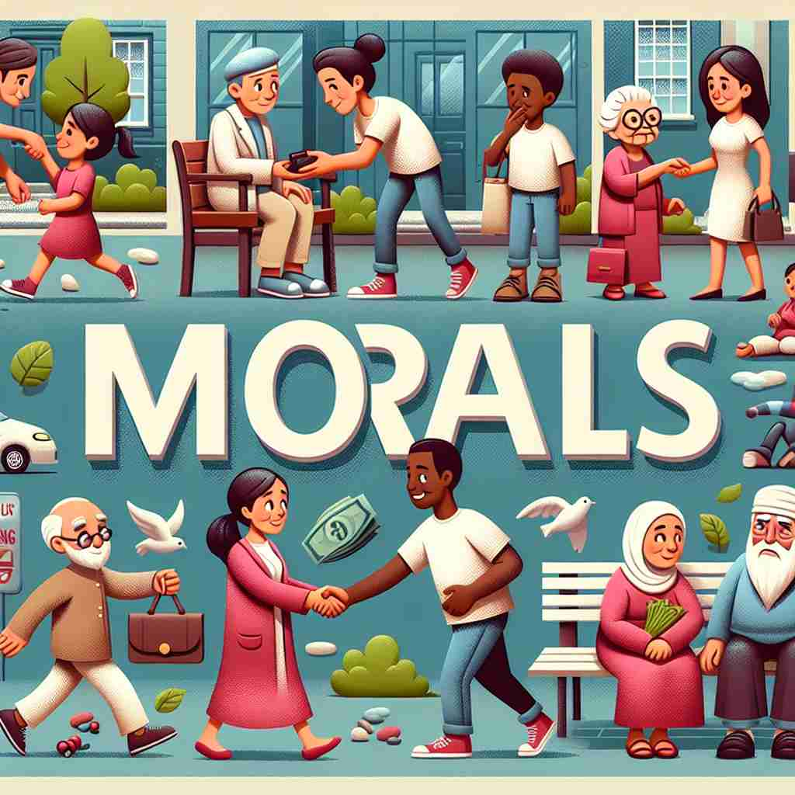

💬 The community demonstrates strong moral values by helping each other. 社区通过互助体现了强烈的道德价值观。

💬 He is thinking about moral decisions at the crossroads. 他正在十字路口思考道德选择。
💬 The community demonstrates strong moral values by helping each other. 社区通过互助体现了强烈的道德价值观。
💬 He is thinking about moral decisions at the crossroads. 他正在十字路口思考道德选择。
🧠 想象'morals'是一个内心的指南针，指引人们分辨对错。这个核心概念贯穿了所有含义：从个人行为准则，到社会标准，再到故事寓意，甚至延伸到内心力量。通过这种方式，你可以更容易理解和记忆'morals'的多重含义。
🗝️ n. principles of right and wrong behavior 正当与错误行为的原则
🎭 在一个古老的村庄，村长正在举行每周的村民集会。他向大家讲述了一个关于诚信的重要性的小故事，提醒大家遵守彼此的承诺。他的演讲结束时，全村人都赞同地点头，这就是 'morals' 作为正确与错误行为原则的体现。
💬 The company has strong morals and always acts ethically. 公司拥有强烈的道德观，并始终以道德的方式行事。
🌳 由词根 'moral'（道德的）加上复数形式 '-s' 组成，指代道德观念或标准。
💡 记忆 'morals' 时，可以联想为 '道德观念的集合'，对应人的行为标准。
🗝️ n. standards of behavior considered acceptable and right by most people 大多数人认为可接受和正确的行为标准
🎭 在现代办公室环境中，所有员工都遵循一个不言而喻的规则：对同事保持礼貌和尊重。当有人遇到困难时，大家会主动伸出援手，这种集体行为标准得到了普遍认可，体现了 'morals' 作为被大多数人认为是可接受和正确的行为标准。
💬 The decline of morals in society is a concern for many. 社会道德的衰退引起了许多人的担忧。
🤔 从个人行为准则扩展到社会普遍接受的标准
🗝️ n. lessons about right and wrong that can be learned from a story 从故事中可以学到的关于对与错的教训
🎭 在小学校园的一间教室里，老师正在给孩子们讲述《龟兔赛跑》的故事。结束后，老师请学生们思考故事所蕴含的道德教训，即坚持不懈的重要性。孩子们纷纷举手分享他们的看法，这代表了 'morals' 作为从故事中学到的关于对错的教训。
💬 Aesop's fables often have clear morals at the end. 伊索寓言通常在结尾处有明确的道德寓意。
🤔 将行为准则应用于故事或寓言中，提取其中的教训
🗝️ n. a person's inner strength and confidence 一个人的内心力量和自信
🎭 在运动场上，一位年轻的马拉松选手在比赛中感到疲惫不堪。然而，她心中有股强大的力量和信心，鼓励她继续前进，最终冲过终点线。这种内心的力量和自信正是 'morals' 在某人内心中的体现。
💬 The team's morals were high after their recent victory. 团队在最近的胜利后士气高昂。
🤔 正确的行为准则可以带来内心的力量和自信